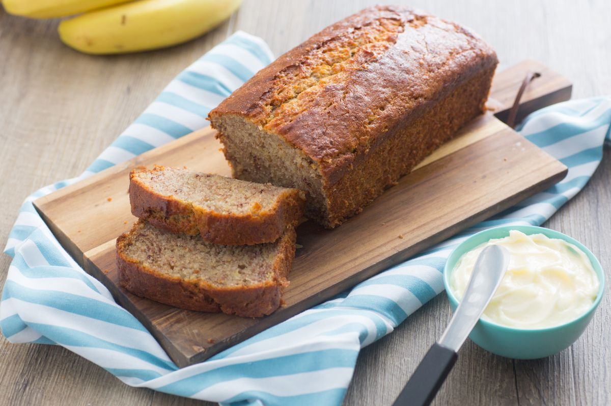

Banana Bread Recipe

Ingredients
- 2 Cups all-purpose flour
- 1 teaspoon baking soda
- 1/4 teaspoon salt
- 1/2 cup butter
- 3/4 cup brown sugar
- 2 eggs beaten
- 2 1/3 cups of mashed overripe bananas
- Preheat oven to 350 degrees F (175 degrees C). Lightly grease a 9x5 inch loaf pan.
- In a large bowl, combine flour, baking soda and salt. In a separate bowl, cream together
butter and brown sugar. Stir in eggs and mashed bananas until well blended. Stir banana
mixture into flour mixture; stir just to moisten. Pour batter into prepared loaf pan.
- Bake in preheated oven for 60 to 65 minutes, until a toothpick inserted into center of
the loaf comes out clean. Let bread cool in pan for 10 minutes, then turn out onto a wire rack.
Nutrition Facts
Per Serving: 229 calories; protein 3.8g; carbohydrates 34.8g; fat 8.8g; cholesterol 51.3mg; sodium 222.9mg. Full Nutrition